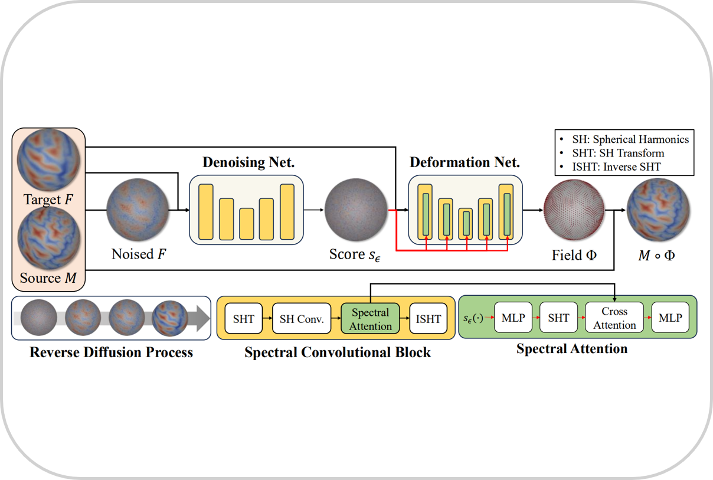
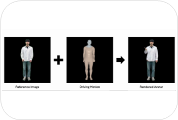

Seungeun Lee
I am an AI Researcher at KLleon, where I am serving as an Expert Research Personnel (alternative military service) in the Republic of Korea and work closely with Gyeong-Moon Park.
My research centers on geometric deep learning for 3D shape and medical image analysis. I aim to build learning methods that respect the geometry of anatomical and biological structures, so that we can align, label, and compare them reliably across individuals, and ultimately support clinical and scientific discovery. My work has focused on the cerebral cortex, including cortical surface registration, sulcal labeling, and learning on spherical manifolds with spherical harmonics and diffusion processes. At KLleon, I have extended this interest in shape to the whole human body, reconstructing and animating 3D human avatars from monocular videos and audio.
Previously, I received my M.S. in Computer Science Engineering from UNIST, where I was a member of the 3D Shape Analysis Lab (now the MIP Lab at POSTECH) advised by Ilwoo Lyu. I received my B.S. from Inha University.
I am applying to Ph.D. programs for Fall 2027.
Seoul, Republic of Korea
seungeunlee00@gmail.com
Latest News
Jul 2026
Selected as an Outstanding Reviewer (Gold) at ICML 2026
Feb 2026
Paper (AudioAvatar) accepted to CVPR 2026
1st Author
Jan 2026
Paper (SMAGA) accepted to ICLR 2026
1st Author
Jun 2025
Paper on cortical surface registration accepted to MICCAI
2025 1st Author
Jun 2025
Paper (SPHARM-Reg) accepted to IEEE Transactions on Medical
Imaging 1st Author
Sep 2024
Paper on sulcal labeling accepted to IEEE Transactions on Medical
Imaging 1st Author
Jun 2024
Won 3rd Place in the RHOBIN Challenge at CVPR 2024
Publications
* For the papers listed below, I proactively led every stage of the work, including (i) problem definition, (ii) technical challenge analysis, (iii) methodology design, (iv) model development, (v) data processing, (vi) experiments, and (vii) writing.

Secondary Motion-Aware 3D Clothed Gaussian Avatars from Monocular Videos
ICLR 2026



* Equal contribution
2026
-
Efficient Universal Lip Synchronization via Audio-Visual Alignment to Implicit Motion SpaceBMVC 2026 British Machine Vision Conference
-
AudioAvatar: Personalized Audio-driven Whole-body Talking AvatarsCVPR 2026 IEEE/CVF Conference on Computer Vision and Pattern Recognition
-
Secondary Motion-Aware 3D Clothed Gaussian Avatars from Monocular VideosICLR 2026 International Conference on Learning Representations
2025
-
GeoAvatar: Adaptive Geometrical Gaussian Splatting for 3D Head AvatarICCV 2025 IEEE/CVF International Conference on Computer Vision
-
Spherical Diffusion Process for Score-Guided Cortical Correspondence via Spectral AttentionMICCAI 2025 Medical Image Computing and Computer Assisted Intervention
-
SPHARM-Reg: Unsupervised Cortical Surface Registration Using Spherical HarmonicsIEEE TMI 2025 IEEE Transactions on Medical Imaging
-
Extensive Spherical Region Enlargement with Isotropic Deformation for Sulcal LabelingISBI 2025 IEEE International Symposium on Biomedical Imaging
-
Leveraging Input-Level Feature Deformation with Guided-Attention for Sulcal LabelingIEEE TMI 2025 IEEE Transactions on Medical Imaging
2023
-
Unsupervised Learning of Cortical Surface Registration Using Spherical HarmonicsShapeMI 2023 International Workshop on Shape in Medical Imaging
-
Facial Texure Perceiver: Towards High-Fidelity Facial Texture Recovery with Input-Level Inductive Biased Perceiver IOICASSP 2023 IEEE International Conference on Acoustics, Speech and Signal Processing
2022
-
Learning 3D Skeletal Representation From Transformer for Action RecognitionIEEE Access 2022 IEEE Access
2021
-
Towards Single 2D Image-Level Self-Supervision for 3D Human Pose and Shape EstimationApplied Sciences 2021 Applied Sciences
Ongoing Projects

Research Experience
2023 – Present
KLleon
AI Researcher, Future AI Team (Professional Research Personnel)
Collaborating with
Gyeong-Moon Park
2021 – 2023
UNIST
Graduate Research Assistant, 3D Shape Analysis Lab
Advised by
Prof. Ilwoo Lyu
(currently, MIP Lab @ POSTECH)
Awards
Outstanding Reviewer (Gold)
ICML 2026
3rd Place, RHOBIN Challenge (3D Body Contact Estimation from Single
RGB Images)
CVPR 2024